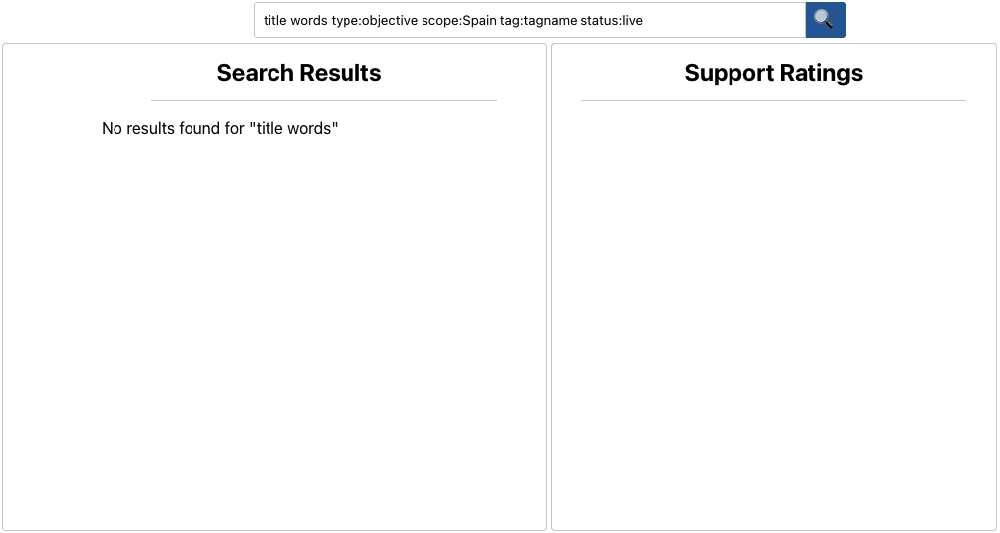

Browsing View
This view can be entered through the search on the main page, or accessed directly at url: /search/.
It helps browse through the database and can accomodate for multiple visualisation options.

Search Bar
Located at the top, this allows the user to search for nodes in the database.
By default, the entered text will be searched for in titles, across all types, statuses, scopes, tags, and ratings.
Filters on the properties can be applied using the following syntax:
> title words type:objective scope:Spain tag:tagname status:live rating:5
Search Results
This pane displays the search results grouped by scope. Nodes can be clicked on to link to the focus view.
Support Histogram
This pane shows the distribution of median support ratings for all the nodes in the search results.